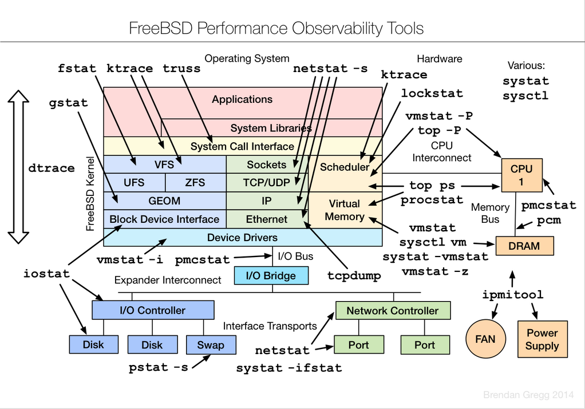

FreeBSD
written by on 2015-08-18. Updated 2016-02-08.
FreeBSD
Installation
Use install media.
Add user to wheel and operator group
First commands
Update FreeBSD:
freebsd-update fetch
freebsd-update install
portsnap fetch extract
/usr/sbin/pkg
Install portmaster for managing ports:
cd /usr/ports/ports-mgmt/portmaster
make install clean
cp /usr/local/etc/portmaster.rc.sample /usr/local/etc/portmaster.rc
vi /usr/local/etc/portmaster.rc
# Always delete stale distfiles without prompting (-d)
ALWAYS_SCRUB_DISTFILES=dopt
# Be verbose (-v)
PM_VERBOSE=vopt
# Install packages for build-only dependencies (--packages-build)
PM_PACKAGES_BUILD=pmp_build
# Delete build-only dependencies when finished (--delete-build-only)
PM_DEL_BUILD_ONLY=pm_dbo
#Suppress the build confirmation message (--no-confirm)
PM_NO_CONFIRM=pm_no_confirm
System Configs
Set locale:
vi /etc/login.conf
- \:umask=022:
+ \:umask=022:\
+ \:charset=UTF-8:\
+ \:lang=en_US.UTF-8:
Rebuild database:
cap_mkdb /etc/login.conf
vi /etc/profile
LANG=en_US.UTF-8; export LANG
CHARSET=UTF-8; export CHARSET
Add some build settings to QT (for gtk, CUPS, and network audio):
echo "QT4_OPTIONS= CUPS QGTKSTYLE NAS" >> /etc/make.conf
/etc/sysctl.conf
# Enhance shared memory X11 interface
kern.ipc.shmmax=67108864
kern.ipc.shmall=32768
# Enhance desktop responsiveness under high CPU use (200/224)
kern.sched.preempt_thresh=224
# Bump up maximum number of open files
kern.maxfiles=204800
kern.maxfilesperproc=200000
# Disable PC Speaker
hw.syscons.bell=0
# Shared memory for Chromium
kern.ipc.shm_allow_removed=1
# Don't wait for USB devices
hw.usb.no_shutdown_wait=1
# Allow users to mount disks
vfs.usermount=1
# Don't automatically use new sound devices
hw.snd.default_auto=0
/boot/loader.conf
# Use new graphical console driver
kern.vty=vt
# Boot-time kernel tuning
kern.ipc.shmseg=1024
kern.ipc.shmmni=1024
kern.maxproc=10000
# Load MMC/SD card-reader support
mmc_load="YES"
mmcsd_load="YES"
sdhci_load="YES"
# Access ATAPI devices through the CAM subsystem
atapicam_load="YES"
# Filesystems in Userspace
fuse_load="YES"
# Intel Core thermal sensors
coretemp_load="YES"
# AMD K8, K10, K11 thermal sensors
amdtemp_load="YES"
# In-memory filesystems
tmpfs_load="YES"
# Asynchronous I/O
aio_load="YES"
# Handle Unicode on removable media
libiconv_load="YES"
libmchain_load="YES"
cd9660_iconv_load="YES"
msdosfs_iconv_load="YES"
#Enable sound at boot
snd_driver_load="YES"
/etc/rc.conf
moused_enable="YES"
# powerd: hiadaptive speed while on AC power, adaptive while on battery power
powerd_enable="YES"
powerd_flags="-a hiadaptive -b adaptive"
# Enable BlueTooth
hcsecd_enable="YES"
sdpd_enable="YES"
# Synchronize system time
ntpd_enable="YES"
# Let ntpd make time jumps larger than 1000sec
ntpd_flags="-g"
# Remote logins
sshd_enable="YES"
background_dhclient="YES"
dbus_enable="YES"
# Check for dependancies but probably need it
hald_enable="YES"
sysctl - edits /etc/sysctl.conf
sysrc - edits /etc/rc.conf
Allow normal users to access disks etc.:
/etc/devfs.conf
This are for ones present at boot time:
# Allow all users to access optical media
perm /dev/acd0 0666
perm /dev/acd1 0666
perm /dev/cd0 0666
perm /dev/cd1 0666
# Allow all USB Devices to be mounted
perm /dev/da0 0666
perm /dev/da1 0666
perm /dev/da2 0666
perm /dev/da3 0666
perm /dev/da4 0666
perm /dev/da5 0666
# Misc other devices
perm /dev/pass0 0666
perm /dev/xpt0 0666
perm /dev/uscanner0 0666
perm /dev/video0 0666
perm /dev/tuner0 0666
perm /dev/dvb/adapter0/demux0 0666
perm /dev/dvb/adapter0/dvr 0666
perm /dev/dvb/adapter0/frontend0 0666
For post-boot drives:
/etc/devfs.rules
[devfsrules_common=7]
add path 'ad[0-9]\*' mode 666
add path 'ada[0-9]\*' mode 666
add path 'da[0-9]\*' mode 666
add path 'acd[0-9]\*' mode 666
add path 'cd[0-9]\*' mode 666
add path 'mmcsd[0-9]\*' mode 666
add path 'pass[0-9]\*' mode 666
add path 'xpt[0-9]\*' mode 666
add path 'ugen[0-9]\*' mode 666
add path 'usbctl' mode 666
add path 'usb/\*' mode 666
add path 'lpt[0-9]\*' mode 666
add path 'ulpt[0-9]\*' mode 666
add path 'unlpt[0-9]\*' mode 666
add path 'fd[0-9]\*' mode 666
add path 'uscan[0-9]\*' mode 666
add path 'video[0-9]\*' mode 666
add path 'tuner[0-9]*' mode 666
add path 'dvb/\*' mode 666
add path 'cx88*' mode 0660
add path 'cx23885*' mode 0660 # CX23885-family stream configuration device
add path 'iicdev*' mode 0660
add path 'uvisor[0-9]*' mode 0660
Enable the ruleset:
sysrc devfs_system_ruleset="devfsrules_common"
Sound device:
List devices:
cat /dev/sndstat
Set default sound device (number from list):
sysctl hw.snd.default_unit=6
Linuxisms
/etc/fstab
proc /proc procfs rw 0 0
fdesc /dev/fd fdescfs rw,auto,late 0 0
X Windows System
Links:
Maintenance
Script to check for updates and list them:
#!/bin/sh
/usr/sbin/portsnap fetch update && \
/usr/local/sbin/portmaster -L --index-only | egrep '(ew|ort) version|total install'
echo -n "Last update: "
date -r `pkg query %t | sort | tail -n1` "+%Y%m%d"
Commands
Useful commands. Taken from here.

Users
adduser # wrapper script to add users
chsh # change user shell and other info
pw groupadd teamtwo # add a group to the system
pw groupmod teamtwo -m <username> # add a user to a group
/etc/group # file to edit groups manually
id # show group membership for current user
System Configuration
cat /var/run/dmesg.boot # show boot log with info about disks and pci devices
kenv # show bios, board and chassi info (dump from kernel env)
pciconf -l -cv # show info about PCI devices of the machine
camcontrol devlist -v # list of attached ATA devices
ifconfig # show and configure network interface parameters
sysctl # tool to show/set all system/kernel coniguration variables
sysctl -a # show all stystem/kernel configuration variables
sysctl hw # show hardware related info and settings
sysctl net # show all network related info and settings
sysctl hw.model # show CPU model
sysctl net.inet.tcp.delayed_ack=0 # disable delayed ack in tcp
System Statistics
top # display and update information about the top cpu processes
nice top -j -P -a # Makes top a bit nicer
ps auxwww | grep <processname> # display process status
systat -vmstat 1 # show general overview of load, memory, interrupts, disk io
systat -iostat 1 # show disk throughput
systat -ifstat 1 # show network throughput for all interfaces
systat -netstat 1 # show netstat output but automatically refreshed
systat -tcp 1 # show tcp statistics
ZFS
zfs list # list all zfs datasets (volumes)
zfs snapshot <pool>/<dataset>@<name> # generic way of creating a snapshot of a dataset in a storage pool
zfs snapshot -r tank@2014021301 # create a snapshot of all datasets in the pool "tank"
zfs rollback <pool>/<dataset>@name # rollback of a dataset to a given snapshot
zfs destroy <pool>/<dataset> # destroy a dataset / remove it from the pool
zfs destroy <pool>/<dataset>@name # destroy a snapshot
zfs set <key>=<val> <pool>/<dataset> # generic way of setting options on a given dataset
zfs set compression=lz4 tank/var/log # enable LZ4 compression on /var/logs
zfs get compressratio <pool>/<dataset> # show the current compression ratio of a dataset
zfs send -R tank@snapshot | \ # send all datasets@snapshot recursively to another host
ssh root@[IP] zfs recv -F tank
zfs unmount <pool>/<dataset> # unmount a zfs dataset
zfs upgrade -r <pool> # upgrade all volumes in the pool (technically its the root volume e.g. tank)
zpool status # show health info about currently imported ZFS storage pools
zpool scrub # check all written blocks for consistency
zpool iostat -v tank # show more information about the pool including log devices
zpool add <pool> mirror <dev1> <dev1> # add two disks as mirror to a storage pool
zpool remove <pool> <device> # remove single devices or mirror sets from the storage pool
zpool upgrade <pool> # upgrade the storage pool to latest version
Software
# Ports
portsnap fetch # fetch the latest portfiles
portsnap update # update the portfiles on disk with the previously fetched portfiles
portsnap update -p /usr/jails/basejail/usr/ports # update ports tree for jails
whereis <portname> # show the directory of the portfile
cd /usr/ports/*/<portname> # find the parent directory of a given portname
locate <portname> | grep ports # manual way of searching for ports
cd <portdir> && make install # compile and install a port
cd <portdir> && make config # re-run configuration of a port when available
cd <portdir> && sudo make deinstall clean reinstall # upgrade the port
# Packages
pkg search <packagename> # search for binary packages
pkg install <packagename> # install binary package and its dependencies
pkg info # show list of currently installed ports/packages with version info
pkg version # show which ports/packages are outdated and need an update
pkg upgrade <packagename> # upgrade a packages
pkg which <filename> # find out which package installed a given file
Services
service -l # list all available services
service -e # list all enabled services
service <servicename> status # show the status of the service with the given servicename
service <servicename> start # start the service with the given servicename
service <servicename> stop # stop the service with the given servicename
service <servicename> restart # restart the service with the given servicename
service <servicename> reload # reload the configuration of the service with the given servicename
Network
ifconfig <iface> inet <ip/mask> # configure IP address on interface
ifconfig <iface> inet <ip/mask> alias # configure IP address alias on interface
ifconfig <iface> del <ip> # remove IP address from interface
route add -net default <gw_ip> # add default route
route add -net <ip/mask> <gw_ip> # add a custom route for given network
/etc/rc.d/netif restart && \ # restart networking and routing after changing the configuration
/etc/rc.d/routing restart without rebooting. Execute in tmux or screen session
netstat -rn # display routing table
netstat -an # display all connections
netstat -m # display buffer usage
netstat -Lan # display status of listen queues
netstat -s # display extensive statistics per protocol (use -p tcp to only show tcp)
sysctl kern.ipc.numopensockets # display number of open sockets
vmstat -z | egrep "ITEM|tcpcb" # number of hash table buckets to handle incoming tcp connections
increase net.inet.tcp.tcbhashsize if hitting the limit
sysctl net.inet.tcp.hostcache.list # display current content of hostcache with its parameters per IP
Firewall
pfctl -si # show current state table and counters (useful for tuning)
pfctl -s state # show current content of state table
IPsec
ipsec start # start VPN and establish (auto=start) VPN connections
setkey -D # show extensive Kernel information about current connections
setkey -DP # show more condensed connection information
ipsec statusall [conn] # show returns detailed status information either on connection or all
connections if no name is provided
ipsec leases # show current leases from virtual IP address pool
ipsec rereadsecrets # flushes and rereads all secrets defined in ipsec.secrets
ipsec rereadall # flushes and rereads all secrets defined in ipsec.secrets as well as all
certificates and and certificate revocation lists
ipsec update # sends a HUP signal to the daemon that determines any changes in ipsec.conf
and updates the configuration on the running IKE daemon charon
ipsec reload # sends a USR1 signal to the daemon that reloads the whole configuration
on the running IKE daemon charon based on the actual ipsec.conf
ipsec restart # terminates all ipsec connections, sends a TERM signal to the daemon and
restarts it afterwards
ipsec stroke up [conn] # initiate connection [conn]
ipsec stroke down [conn] # terminate connection [conn]
ezjail
ezjail-admin start|stop # start and stop all the jails
ezjail-admin start|stop <JID>|<hostname># start and stop individual jail
ezjail-admin list # list all the jails on the host system
ezjail-admin console <JID>|<hostname> # open root shell into jail
ezjail-admin create -f exmaple <hostname> <IP> # create a new jail
ezjail-admin delete -w hostname # delete the jail (in case you use zfs also delete the volume)
Common sysctl's to set
hw.usb.no_shutdown_wait=1 # don't wait for USB devices when shutting down (if your system hangs when
rebooting)
kern.maxfiles=204800 # Increase file descriptor limits
kern.maxfilesperproc=200000
Software
Usenet
pkg install sabnzbd
Edit /usr/local/sabnzbd/sabnzbd.ini Change hosts to 0.0.0.0 to allow access from other machines
pkg install git wget p7zip
cd /usr/local
git clone https://github.com/SiCKRAGETV/SickRage.git sickrage
chown -R _sabnzbd:_sabnzbd /usr/local/sickrage
cp /usr/local/sickrage/runscripts/init.freebsd /usr/local/etc/rc.d/sickrage
sysrc sickrage_user="_sabnzbd"
sysrc sickrage_group="_sabnzbd"
sysrc sickrage_enable="YES"